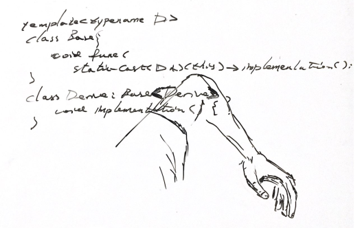
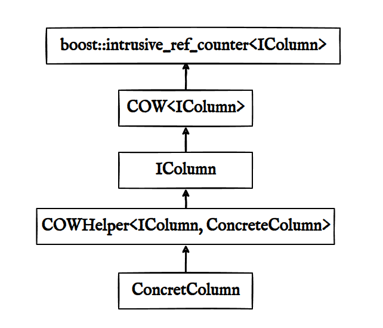

从动态绑定到奇异递归模板模式
From Dynamic Binding To Curious Recurring Template Pattern.
Dynamic Binding
形式 1
- 声明一个函数指针
- 在运行的时候将函数作为右手边的值 (rhs) 赋予该函数指针
形式 2
C++ virtual function.
struct B {
virtual void func1() {}
virtual void func2() {}
};
struct D1 : B {
void func2() {}
};
struct D2 : B {};
int main() {
B* p1 = new D1;
B* p2 = new D2;
p1->func2();
p2->func1();
}
其中 p1->func() 的汇编是：
movq -24(%rbp), %rax ; load p1 to rax
movq (%rax), %rax ; dereference p1 to *p1, which is a table
addq $8, %rax ; calculate the address of the 2nd entry
movq (%rax), %rdx ; get the content of the 2nd entry
movq -24(%rbp), %rax ; load p1 to rax
movq %rax, %rdi ; let p1 be the first argument
call *%rdx ; jump to that said 2nd entry
从汇编可以看出，执行虚函数的时候，首先加载一张表，找到对应的函数地址，再跳过去，这也叫动态绑定，因为不确定程序在跟外界交互的时候，外界做出什么选择，程序要创建哪个派生类，所以所有派生类的方法调用，都需要先查找虚表。
Static Binding
目的：消除虚表的花销
Curious Recurring Template Pattern
来自 https://en.cppreference.com/w/cpp/language/crtp 的例子：
template <class Derived>
struct Base { void name() { (static_cast<Derived*>(this))->impl(); } };
struct D1 : public Base<D1> { void impl() { std::cout << "D1::impl()\n"; } };
struct D2 : public Base<D2> { void impl() { std::cout << "D2::impl()\n"; } };
int main()
{
Base<D1> b1; b1.name();
Base<D2> b2; b2.name();
D1 d1; d1.name();
D2 d2; d2.name();
}
根据 https://en.wikibooks.org/wiki/More_C%2B%2B_Idioms/Curiously_Recurring_Template_Pattern ，这种模式也叫做：
- CRTP
- Mixin-from-above
- Static polymorphism
- Simulated dynamic binding
- Upside-down Inheritance
这些词让人望而生畏，一一解释如下：
- 了解 dynamic binding 之后就知道 Simulated dynamic binding, 因为
Base* p和Base<D> b存在一种形式上的相似 - Static polymorphism, 因为它涉及到继承，继承(所以)多态(必要不充分条件)，另外
Base<D> b看起来就像Base* p - Mixin-from-above，从这篇文章来看：
Base<Derived>是 mixin class，Derived从Base<Derived>中试图获取方法，但发现方法的实现其实依赖Derived自己本身，我不理解为什么叫做 above, 难道正常的 mixin 是 from below? Base, 基础，地基，所以是 below? 在我们眼中基类是 root。如果强调派生类建立在基类的基础上，那么，派生类确实是 above。 - Upside-down Inheritance:
Derived: Base<Derived>是 upside down, 这是因为先有Derived，后有Base。如果没有Derived，编译器是不会去展开模板template<typename D> Base的，Base能存在完全是拜 Upside， 即Derived所赐。

图：你透过<> 去摸索实现，没想到摸到自己
以上可能存在曲解。
为什么关心这个模式？因为以前在 ClickHouse 源码看到许多这种代码，这种代码在其他地方并不常见，所以我的问题是，这么做有什么好处？Base<D1> b1 可以和 Base* p 可以互相拿来类比吗？
好处之一当然是避免虚函数。坏处是，你不能用一个数组管理派生类对象：vector<Base*>, 但这个很重要吗？
不重要，Bash 没有多态，也照样能写代码。
多态主要用来写这种接口：
void func(Base *);
这种接口可以用模板模拟：
template<typename T>
void func(T &);
如果用 CRTP, 那就是：
template<typename T>
void func(Base<T> &);
Base<T> 加了一层约束，使用这个模板的类型要么就是 Base<T>, 要么就是 Base<T> 的派生类，前者只是普通的泛型接口, 后者使用了 static polymorphism
也就是说在 Base<T> 实现大量功能，充当 mixin class，但这不足以推导出 T: Base<T>
后者也许是在电光石火的灵感中产生的，这篇论文是 1995 年写的，作者考究了 CRTP 的起源和应用，发现 CRTP 不限于 C++，在其他语言也能找到应用，作者的结论是：Pattern, idiom, or coincidence? time will tell.
enable_shared_from_this用了这种模式，因为它是现代 C++，而且距离我们最近(shared_ptr 很常用吧？)，所以学习它的例子很有必要。
为了不重复抄代码，我想到一个应用场景：
template <typename Behavior> struct must_die_of_something
{
void cause_of_death() { impl()->tell(); }
Behavior *impl() { return static_cast<Behavior *>(this); }
};
struct Smoking : must_die_of_something<Smoking>
{
void tell() { lzlog("Lung cancer", s); }
};
struct Running : must_die_of_something<Running>
{
void tell() { lzlog("Knee Injury", s); }
};
struct Promiscuity : must_die_of_something<Promiscuity>
{
void tell() { lzlog("HIV", s); }
};
int main() {
must_die_of_something<Smoking> smoker;
must_die_of_something<Running> runner;
must_die_of_something<Promiscuity> probably_you;
smoker.cause_of_death();
runner.cause_of_death();
probably_you.cause_of_death();
}
Ok, so what?
ClickHouse 中的应用
声明一个 Column, mixin 了大量 COW 的特征
class Column : public COW<Column>
{
private:
friend class COW<Column>;
Column();
virtual Column * clone() const;
public:
virtual ~Column() {}
};
其中 COW 的实现为：
template <typename Derived>
class COW : public boost::intrusive_ref_counter<Derived>;
创建一个 Helper 类：
class IColumn : public COW<IColumn>
{
friend class COW<IColumn>;
virtual MutablePtr clone() const = 0;
virtual ~IColumn() {}
};
class ConcreteColumn : public COWHelper<IColumn, ConcreteColumn>
{
friend class COWHelper<IColumn, ConcreteColumn>;
};
template <typename Base, typename Derived>
class COWHelper : public Base
{
private:
Derived * derived() { return static_cast<Derived *>(this); }
const Derived * derived() const { return static_cast<const Derived *>(this); }
}
结构：

也就是说 ConcretColumn mixin 了 COWHelper，但 ConcretColumn 有自己的一些方法，接着，CowHelper 依赖 IColumn 的代码，IColumn 需要 COW， copy-on-write 特征，后者需要 boost 的引用记数。
这就是 ClickHouse 的代码让人难以忘怀的原因。
结论
如果我要用这种模式，首先我需要整合重复代码到一个 Base 类，Base 类先写需要哪些 Derived 接口，其他 Derived 类按照需求实现。不直接使用 Derived，而是将 Derived 类型传入 Based 类，以 Base<Derived> 的形式使用，模拟动态绑定，由于 Base<Derived> 恰好就是 Derived 的基类/父类，因此这种方法叫做 static polymorphism。
参考
- https://www.fluentcpp.com/2017/05/12/curiously-recurring-template-pattern/
- https://www.fluentcpp.com/2017/12/12/mixin-classes-yang-crtp/
- https://eli.thegreenplace.net/2013/12/05/the-cost-of-dynamic-virtual-calls-vs-static-crtp-dispatch-in-c
- https://eli.thegreenplace.net/2011/05/17/the-curiously-recurring-template-pattern-in-c/
- 一篇 1995 年的论文